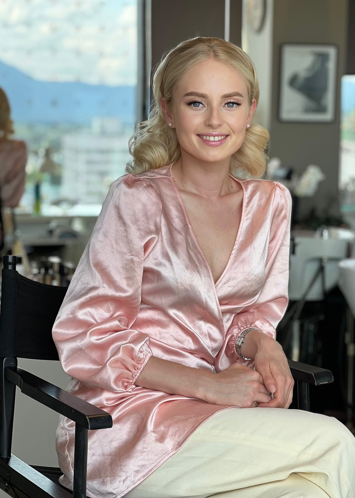
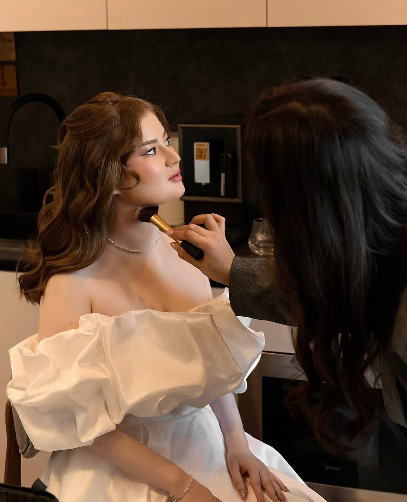

Poročno ličenje v Mariboru — makeup za nevesto
Bridal makeup in Maribor — makeup for the bride
Свадебный макияж в Мариборе — макияж для невесты
Na poročnem dnevu mora ličilo zdržati od jutra do poznega večera, dobro izgledati na fotografijah in se ujemati z obleko, pričesko ter celotno zgodbo poroke. Zato poročnemu ličenju posvetim posebno pozornost — od posvetnega poskusa do jutra samega dogodka.
On a wedding day the makeup has to last from morning until late evening, look good in photographs and match the dress, the hairstyle and the whole story of the wedding. That is why bridal makeup gets special attention — from the trial to the morning of the day itself.
В день свадьбы макияж должен держаться с утра до позднего вечера, хорошо выглядеть на фотографиях и сочетаться с платьем, причёской и всей историей торжества. Поэтому свадебному макияжу я уделяю особое внимание — от пробного до утра самого дня.



Kdaj rezervirati termin
When to book
Когда записываться
Poročno sezono v Mariboru in okolici začnemo polniti že zgodaj spomladi. Idealen čas za rezervacijo je 4–6 mesecev pred poroko, za poletne sobote še prej. Poskusno ličenje priporočam 4–6 tednov pred dogodkom, ko so obleka, pričeska in dodatki že izbrani.
The wedding season in Maribor and around it fills up early in spring. The ideal time to book is 4–6 months before the wedding, and even earlier for summer Saturdays. I recommend the trial 4–6 weeks before the event, when the dress, hairstyle and accessories are already chosen.
Свадебный сезон в Мариборе и окрестностях заполняется уже ранней весной. Идеальное время для брони — за 4–6 месяцев до свадьбы, для летних суббот ещё раньше. Пробный макияж советую за 4–6 недель до события, когда платье, причёска и аксессуары уже выбраны.
Poskusno ličenje
Trial makeup
Пробный макияж
Na poskusu preizkusimo podlago, barve in intenzivnost. Pogledamo, kako se ličilo obnaša čez dan in kako izgleda na fotografijah. Če želite, se poskus lahko opravi skupaj s poskusno pričesko, da vidite celotno podobo. Poskus traja približno 60 minut; če se odločite za termin, se njegova cena odšteje od poročnega ličenja.
During the trial we test the base, the colours and the intensity. We see how the makeup behaves through the day and how it looks in photographs. If you wish, the trial can be done together with a hair trial so you see the whole look. The trial takes about 60 minutes; if you book, its price is deducted from the bridal makeup.
На пробе мы подбираем тон, цвета и интенсивность. Смотрим, как макияж ведёт себя в течение дня и как выглядит на фотографиях. При желании пробу можно сделать вместе с пробной причёской, чтобы увидеть образ целиком. Проба занимает около 60 минут; при записи её стоимость вычитается из цены свадебного макияжа.
Kako poteka na dan poroke
How the wedding day works
Как проходит день свадьбы
Na dan poroke pridem dovolj zgodaj, da je ličenje končano brez naglice. Kožo pripravim na mestu. Ličilo prilagodim svetlobi v prostoru in fotografu — to je pomembno, ker se barve na fotografijah lahko spremenijo. Na koncu dodam fiksirni sprej in vam pustim korekcijski set za popoldne.
On the wedding day I arrive early enough for the makeup to be finished without rushing. I prepare the skin on site. I adapt the makeup to the light in the room and to the photographer — this matters because colours can change in photographs. At the end I add a setting spray and leave you a touch-up kit for the afternoon.
В день свадьбы я приезжаю достаточно рано, чтобы макияж был готов без спешки. Кожу готовлю на месте. Макияж подстраиваю под свет в помещении и под фотографа — это важно, потому что цвета на снимках могут меняться. В конце наношу закрепляющий спрей и оставляю вам набор для коррекции на вторую половину дня.
Cene poročnega ličenja
Bridal makeup prices
Цены свадебного макияжа
Poročno ličenje 90 € (90 min), poskusno ličenje 40 € (60 min). Za neveste, ki želijo ličenje tudi za družinske člane, se dogovorimo za paket. Aktualni cenik je na strani Storitve.
Bridal makeup €90 (90 min), trial makeup €40 (60 min). For brides who also want makeup for family members, we can arrange a package. The current price list is on the Services page.
Свадебный макияж 90 € (90 мин), пробный 40 € (60 мин). Если нужно сделать макияж и близким — договоримся о пакете. Актуальный прайс — на странице Услуги.
Nasveti za neveste
Advice for brides
Советы невестам
Nekaj dni pred poroko ne poskušajte novih tretmajev na koži — nobenih novih kislin, pilingov ali močnih mask. Dan prej se naspite. Na dan poroke pridite brez ličila ali z minimalno nego; lasje naj bodo suhi, če sledi pričeska. Prinesite fotografije želenega videza — lažje se uskladimo.
A few days before the wedding do not try new skin treatments — no new acids, peels or strong masks. Get enough sleep the day before. On the wedding day come without makeup or with minimal care; hair should be dry if a hairstyle follows. Bring photos of the look you want — it is easier to align.
За несколько дней до свадьбы не пробуйте новых процедур для кожи — никаких новых кислот, пилингов и сильных масок. Накануне выспитесь. В день свадьбы приходите без макияжа или с минимальным уходом; волосы должны быть сухими, если планируется причёска. Принесите фотографии желаемого образа — так проще совпасть в ожиданиях.
Pogosta vprašanja
Frequently asked questions
Частые вопросы
Ali je poskusno ličenje obvezno?Is the trial makeup mandatory?Обязателен ли пробный макияж?
Ni obvezno, a ga priporočam. Na poskusu se izognemo presenečenjem na dan poroke in uskladimo barve z obleko ter fotografom.
It is not mandatory, but I recommend it. The trial avoids surprises on the wedding day and aligns the colours with the dress and the photographer.
Не обязателен, но я рекомендую. На пробе мы избегаем сюрпризов в день свадьбы и согласуем цвета с платьем и фотографом.
Ali se ličilo vidi na fotografijah?Will the makeup show in photographs?Будет ли макияж виден на фотографиях?
Prav zato poročno ličilo delam nekoliko izraziteje kot dnevno — fotoaparat »poje« del barve. Na poskusu preverimo, kako izgleda na posnetkih.
That is exactly why bridal makeup is slightly more defined than day makeup — the camera eats part of the colour. During the trial we check how it looks on camera.
Именно поэтому свадебный макияж я делаю чуть выразительнее дневного — камера «съедает» часть цвета. На пробе проверяем, как он выглядит на снимках.
Ali pridete na lokacijo?Do you come to the location?Приезжаете ли вы на место?
Da, izvedba na lokaciji je možna po dogovoru. Termin in lokacijo potrdimo vnaprej, da se uskladimo s pričesko in fotografom.
Yes, on-location makeup is possible by arrangement. We confirm the time and location in advance so everything aligns with the hairstyle and the photographer.
Да, выезд на место возможен по договорённости. Время и адрес подтверждаем заранее, чтобы всё совпало с причёской и фотографом.
Rezervirajte termin v Mariboru
Book your appointment in Maribor
Запишитесь в Мариборе
Termin rezervirate na strani Rezervacija ali prek WhatsAppa.
Book on the booking page or via WhatsApp.